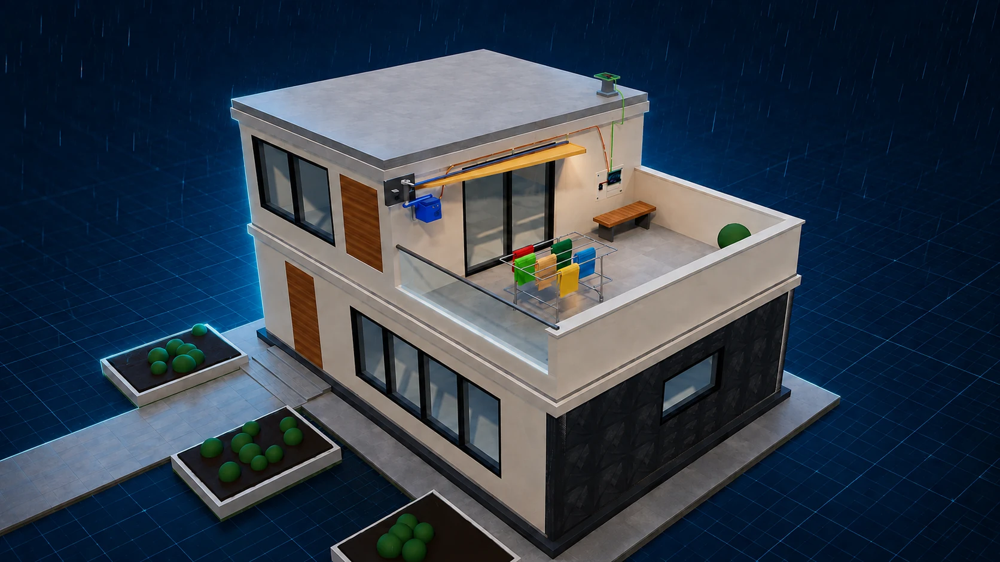

Electronic & EngineeringInteractive build
The problem
The washing is outside. The rain has arrived. Can an automatic roof protect it in time?
6 build stages code challenge working proof
Fit the mechanism in six stages, discover the correct Arduino values through trial and error, then prove the roof protects the washing.
AishaThe problem · 1 / 2
Oh no—the clothes are still outside and the rain has started. If nobody is home, they will be soaked.
Start the activity to build a rain-sensing folding roof in six guided stages, tune its Arduino code, and test the finished system.
Change the two highlighted numbers, upload, and learn from the physical result.
#include <Servo.h> const int RAIN_PIN = 7; const int SERVO_PIN = 9; Servo awning; void setup() { pinMode(RAIN_PIN, INPUT); awning.attach(SERVO_PIN); } void loop() { if (digitalRead(RAIN_PIN) == HIGH) { // rain! awning.write(30°); // angle delay(1500); // wait ms } else { awning.write(0); } }
Mission: find an angle that covers every shirt and a delay that reacts before the washing gets wet.
Trial 0 of 3 before the coach unlocks
AishaBuild · 1 / 6
Smart rain roof
Rain → sensor → Arduino → servo → roof.
drag to orbit · scroll to zoom · click a component for details